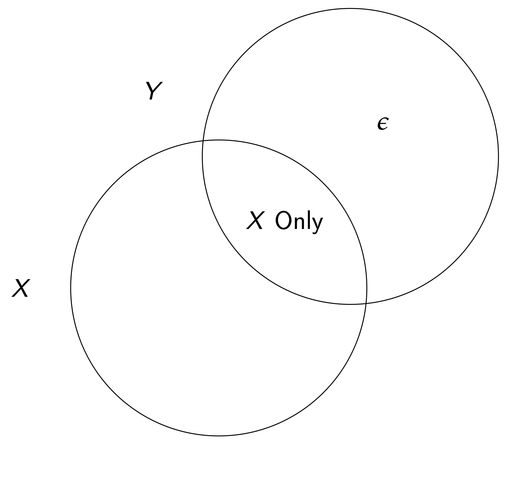
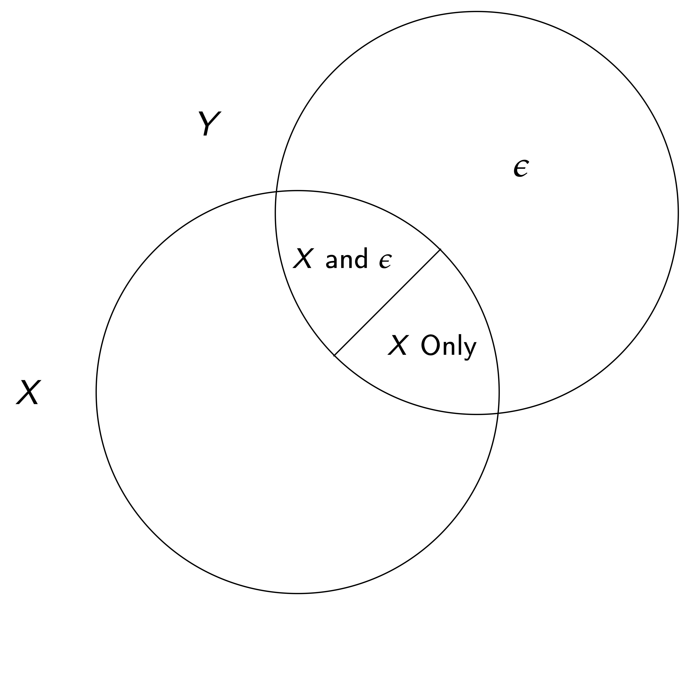
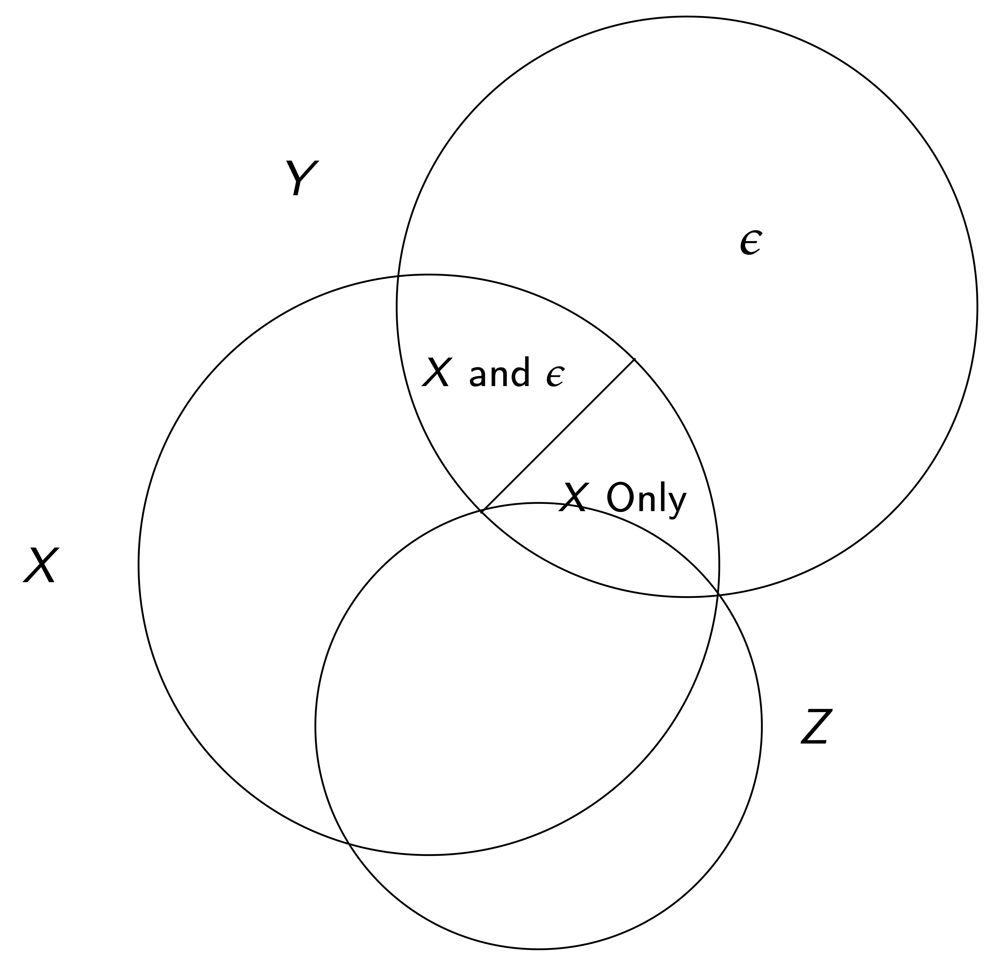
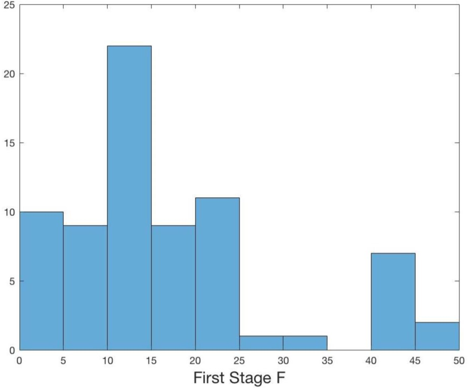
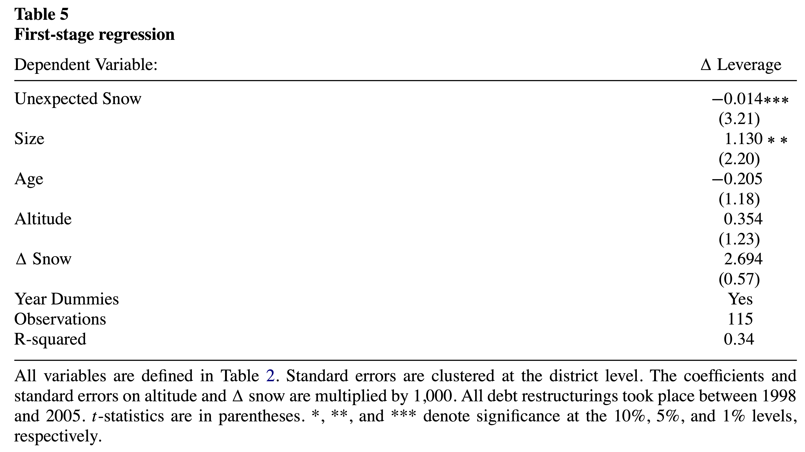
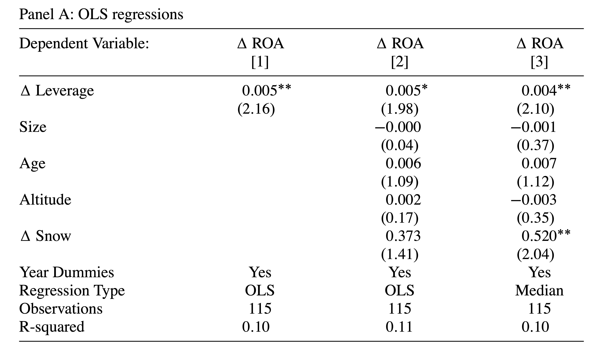
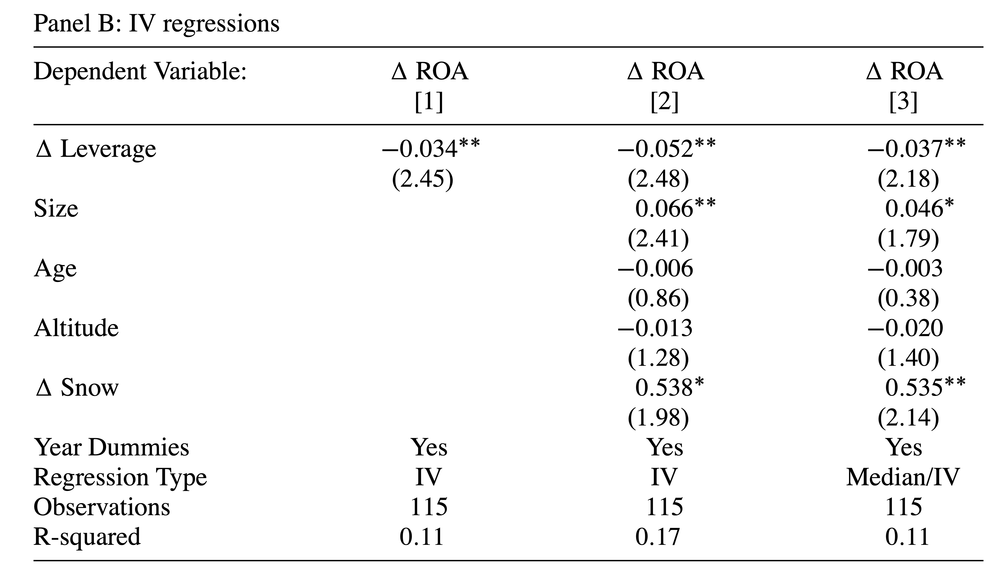

In other words, if one component X is not orthogonal to \varepsilon, \widehat{\beta}_{OLS} is biased (note that here we care about \beta, the univariate coefficient on x, not the vector of all coefs.).
Assume that we can find some other (instrumental) variable that satisfies
x = \gamma z + \tilde{X}\gamma_{\tilde{X}} + \mu \quad \text{where} \quad Cov[z,\varepsilon] = 0, \gamma \ne 0
We can isolate variation in the determination of x through z that is unrelated to the main relationship we are studying (the effect of x on y).
Introduction to IV
We need two assumptions for a valid IV
Relevance — There must be correlation between z and xconditional on all other variables in a system i.e. \gamma \ne 0
Exclusion — The variable can be excluded from the main equation of interest.
Two important parts to this assumption:
The only relationship between z and y is through the first stage relationship
Conditional on covariates (\tilde{X}), the instrument is as good as randomly assigned
IV Variation

IV Variation

IV Variation

How does this work?
Typically done as a two stage OLS estimation
Estimate the relationship between z and x (including all other variables in the main equation)
Note that the identifying assumptions imply that the IV coefficient is asymptotically consistent
The estimator is biased in finite samples, but more on this later
Where do good instruments come from?
IV originally developed as a technique to estimate systems of equations (e.g. supply and demand for oranges)
Using rainfall to instrument supply in order to isolate perturbations in quantity and price along a demand curve
Good instruments have credible economic link for relevance, and a logical reason for exclusion
Relevance can be tested since it is a partial correlation
Exclusion cannot be tested, so it must be argued based off of logical reasoning
Common (good) instruments include physical events, institutional changes, etc.
Common bad instruments include lagged variables and group averages excluding an individual member
More on the Exclusion Restriction
The exclusion assumption cannot be tested
We never observe the true errors of a model, so we cannot test whether they are correlated with our instrument
Moreover, the estimated residuals will always be orthogonal to all covariates in a regression, so we cannot “test” whether a potentially endogenous variable is correlated with the error of a regression
Researchers need to come up with supporting evidence that the exclusion restriction might hold
Placebo tests can be helpful
Maybe there is a region or time period when we think an effect shouldn’t be present
Are there other outcomes where confounding stories would have implications that can be tested?
More on IV
IV is consistent, but biased in finite samples towards the OLS estimate
Basically because the first stage is estimated (with noise) there is bias unless the sample is really large
Since (asymptotically) \widehat{\beta}_{2SLS} = \beta + \frac{Cov[\epsilon,z]}{Cov[x,z]}, in finite samples, we are dividing the potential bias by the strength of the instrument, so it is really important to have a strong instrument
Adding more weak instruments makes the problem worse
Several papers suggest having a first-stage F-statistic on the instrument of greater than 10 or so.
Best practices are evolving
Inference with weak (but valid) instruments
Imposing filters (like an F-statistic cutoff) can induce distortions in which specifications/magnitudes are reported
Weak instruments are only a problem when there is a violation of the exclusion restriction — filters will rule out cases of good instruments that have low power — would otherwise identify useful causal magnitudes
Like p-value cutoffs

Distribution of F-Statistics in AER publications 2014–2018
Over-Identification
Consider only one endogenous variable in an equation. If there are more than one instruments for the variable, it is over-identified. In this case there is a “test” to show whether one instrument versus another instrument provides different estimates
BUT they could all be bad instruments…
IV example — Snow and Leverage
Giroud et al. (2012) (GMSW) study whether reducing debt overhang increases firm performance
Important question, but tough to find exogenous variation in debt forgiveness
The authors look at “unexpected” changes in snow on Austrian ski resorts
Look within the set of firms that had a debt restructuring to try and identify those that were strategic defaulters — i.e. those firms that defaulted despite having “favorable” circumstances
Economic story — those firms that had renegotiated and had unexpected good snow likely underinvested or were lazy, whereas those that had bad snow were more likely liquidity defaulters
Possible if lenders cannot ex-ante credibly commit to ex-post inefficient liquidation
Obvious alternative story is that managers who default despite good snow are bad managers. Authors attempt to address this.
GMSW IV story
Note that their story is not about the amount or level of snow, but the unexpected snow
Economic setting argues relevance
Exclusion restriction ((1) that conditional on covariates the variation is random and (2) that strategic debt relief is the only channel at work) relies on a few points
Primary analysis is on restructuring firms — so this looks within the set of restructuring firms and isolates variation in how the debt was restructured, so alternate stories have to explain variation within these firms
Authors control for the amount of snow (and this loads in the expected direction), so alternative explanations cannot be about the amount of snow
The authors first start with OLS regressions — they find that an increase in leverage is correlated with an increase in ROA
Next instrument change in leverage by abnormally high or low snowfall in recent years
Finally show the second stage results
IV estimation

Coefficient is negative — consistent with economic justification of instrument
Correlation is strong — F-Stat of \beta=0 is 10.3 — Important to ensure relevance condition is met
OLS

IV Second Stage

IV results flip sign compared to OLS results, suggesting that IV approach was important
Authors interpret their findings as restructuring caused by strategic defaults leads to better ROA because managers/shareholders are better incentivized
More on the Exclusion Restriction and bias
We said before that exclusion assumption cannot be tested
We never observe the true errors of a model, so we cannot test whether they are correlated with our instrument
Moreover, the estimated residuals will always be orthogonal to all covariates in a regression, so we cannot “test” whether a potentially endogenous variable is correlated with the error of a regression
Researchers need to come up with supporting evidence that the exclusion restriction might hold
Since GMSW’s sample is small, bias could be a problem but find an IV that is opposite from the OLS, their instrument is strong this is less of a problem (recall small departures from exogeneity are a problem with small samples and weak instruments)
Last points about general IV
The first stage should be linear in order to ensure consistent second stage estimates
Binary endogenous variables should NOT be estimated via probit/logit
All variables in the second stage must be included in the first stage, otherwise estimates are inconsistent
Statistical inference in the second stage must be done on actual (not estimated) data. (the linearmodels module does this automatically)
IV can also be used to correct for measurement error if it is a problem and you have a plausible instrument
Bootstrap and Randomization Inference
Motivation
In many empirical settings, standard asymptotic inference may be unreliable:
Small samples — asymptotic approximations may not hold
Non-standard distributions — test statistics may not be normally distributed
Complex dependence structures — standard errors may be difficult to compute analytically
Simulation-based methods offer an alternative by constructing the distribution of a test statistic empirically rather than relying on theoretical approximations.
See Rosenbaum (2010) and Imbens and Rubin (2015) for detailed discussions.
Bootstrap Inference
The bootstrap(Efron 1979) estimates the sampling distribution of a statistic by resampling with replacement from the observed data.
Procedure:
Compute the statistic of interest \hat{\tau} from the original sample
Draw B bootstrap samples (same size, with replacement)
Compute \tilde{\tau}_b for each bootstrap sample b = 1, \ldots, B
Use the distribution of \{\tilde{\tau}_1, \ldots, \tilde{\tau}_B\} for inference
Confidence intervals: Use the quantiles of the bootstrap distribution, e.g., the 2.5th and 97.5th percentiles for a 95% CI.
p-values: Fraction of bootstrap statistics at least as extreme as \hat{\tau} under the null.
Bootstrap — Intuition
The key idea: the empirical distribution \hat{F}(x) of the observed data approximates the true population distribution F(x).
Drawing with replacement from the sample is equivalent to drawing from \hat{F}(x)
Each bootstrap sample reflects the variability we would expect if we could resample from the population
The bootstrap distribution of \tilde{\tau} approximates the sampling distribution of \hat{\tau}
Works well when:
The sample is representative of the population
The statistic is smooth (e.g., means, regression coefficients)
Can fail when the sample is very small or the statistic depends on extreme values.
Randomization Inference
Randomization inference (also called permutation tests or random shuffles) tests whether an observed relationship is statistically significant by breaking the association between variables.
Procedure (e.g., testing whether Y is related to X):
Compute the statistic \hat{\tau} from the original data \{Y_t, X_t\}
Randomly shuffle \{Y_t\} (without replacement) to create \{\tilde{Y}_t\}
\tilde{Y}_t is now independent of X_t
Compute \tilde{\tau} from \{\tilde{Y}_t, X_t\}
Repeat N times to get \{\tilde{\tau}_1, \ldots, \tilde{\tau}_N\}
p-value: Reject if \hat{\tau} < q_{2.5\%}(\tilde{\tau}) or \hat{\tau} > q_{97.5\%}(\tilde{\tau}).
Bootstrap vs. Randomization Inference
Bootstrap
Randomization
Resampling
With replacement
Without replacement (shuffle)
What it tests
Sampling uncertainty
Whether the relationship is real
Null hypothesis
Varies (e.g., \beta = 0)
No association between variables
Preserves
Marginal distributions
Marginal distributions, sample size
Breaks
Nothing (resamples pairs)
The association between Y and X
Both methods are non-parametric: they make no assumptions about the distribution of the data.
Using both provides complementary evidence: bootstrap reflects sampling uncertainty, while randomization tests structural significance.
Example: Bootstrap and Randomization in OLS
Consider a small sample (n = 30) where we estimate Y = \alpha + \beta X + \varepsilon.